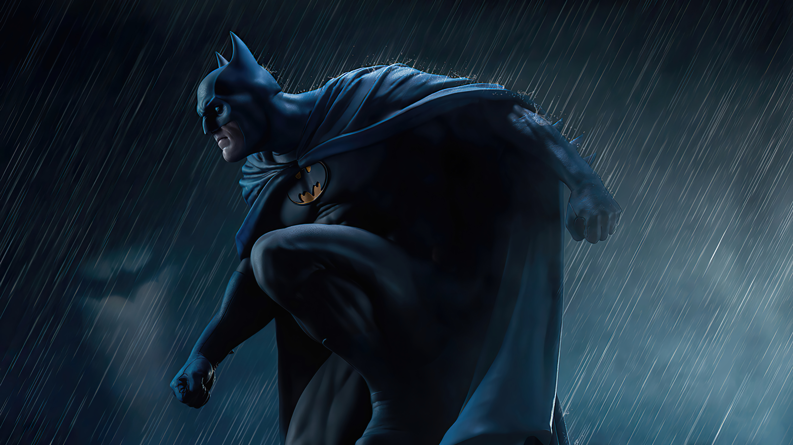
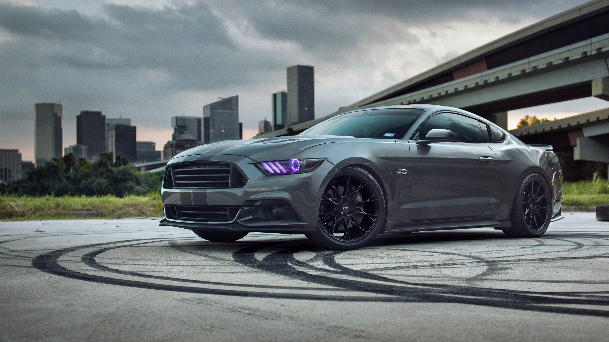
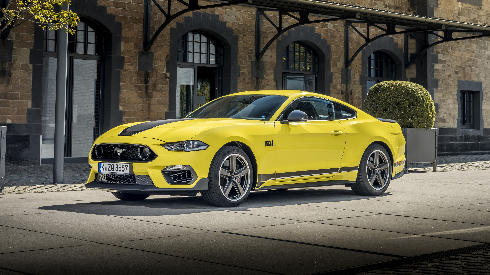
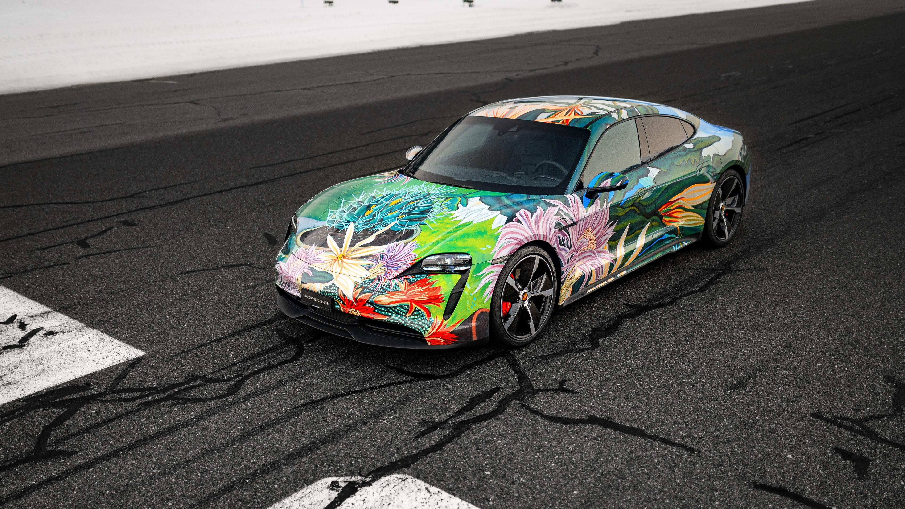

In the name of his murdered parents, Bruce Wayne wages eternal war on the criminals of Gotham City. He is vengeance. He is the night. He is Batman. One of the most iconic fictional characters in the world, Batman has dedicated his life to an endless crusade, a war on all criminals in the name of his murdered parents, who were taken from him when he was just a child. Since that tragic night, he has trained his body and mind to near physical perfection to be a self-made Super Hero. He's developed an arsenal of technology that would put most armies to shame. And he's assembled teams of his fellow DC Super Heroes, like the Justice League, the Outsiders and Batman, Incorporated.
The Ford Mustang is a series of American automobiles manufactured by Ford. In continuous production since 1964, the Mustang is currently the longest-produced Ford car nameplate. Currently in its sixth generation, it is the fifth-best selling Ford car nameplate. The namesake of the "pony car" automobile segment, the Mustang was developed as a highly styled line of sporty coupes and convertibles derived from existing model lines, initially distinguished by "long hood, short deck" proportions.[3] Originally predicted to sell 100,000 vehicles yearly, the 1965 Mustang became the most successful vehicle launch since the 1927 Model A.[4] Introduced on April 17, 1964[5] (16 days after the Plymouth Barracuda), over 400,000 units in its first year; the one-millionth Mustang was sold within two years of its launch.[6] In August 2018, Ford produced the 10-millionth Mustang; matching the first 1965 Mustang, the vehicle was a 2019 Wimbledon White convertible with a V8 engine.[7]
he 2021 Ford® Mustang GT Premium Fastback features leather-trimmed seats with perforated inserts in Ebony, Ceramic or Tan.
Porsche Taycan
